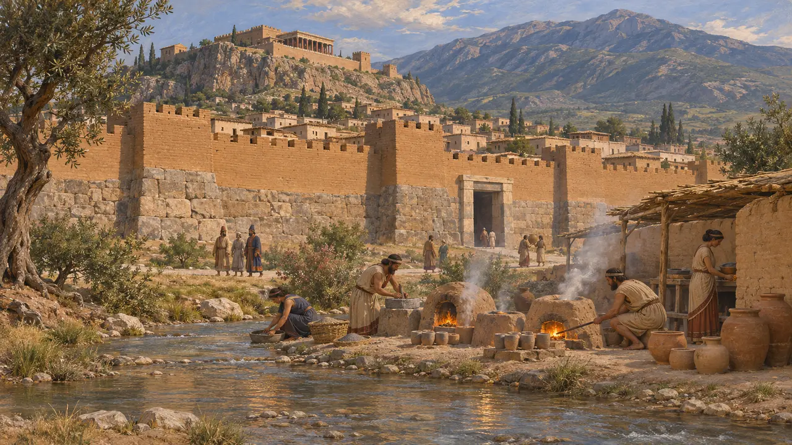
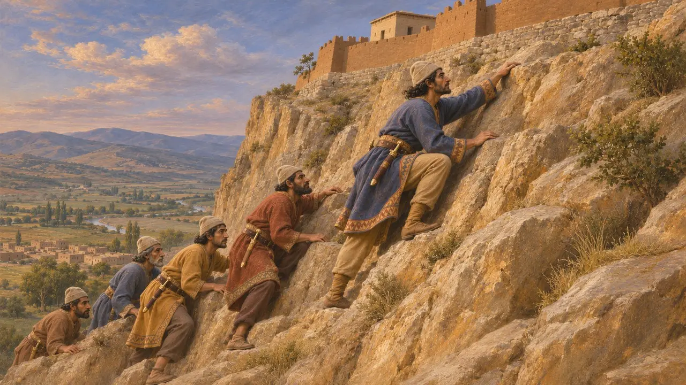
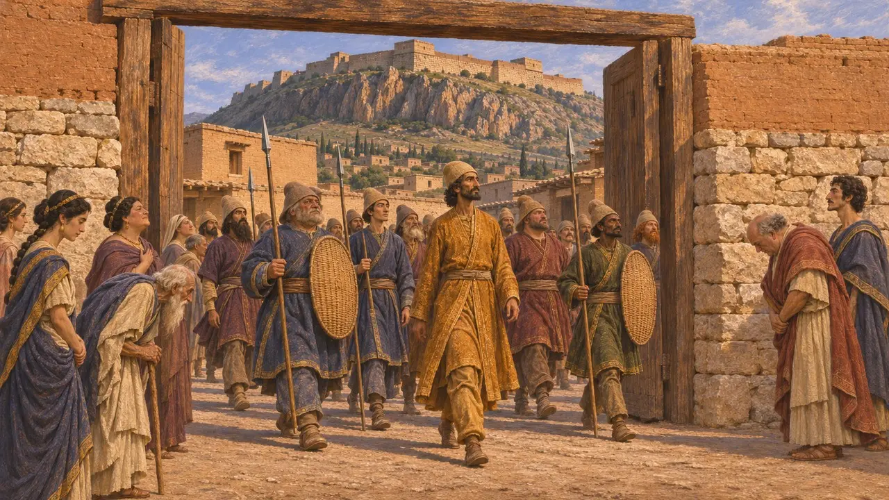
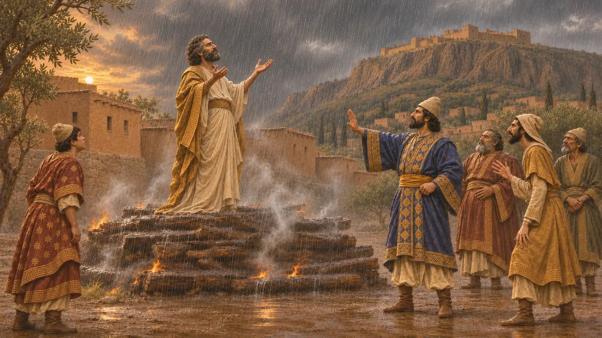
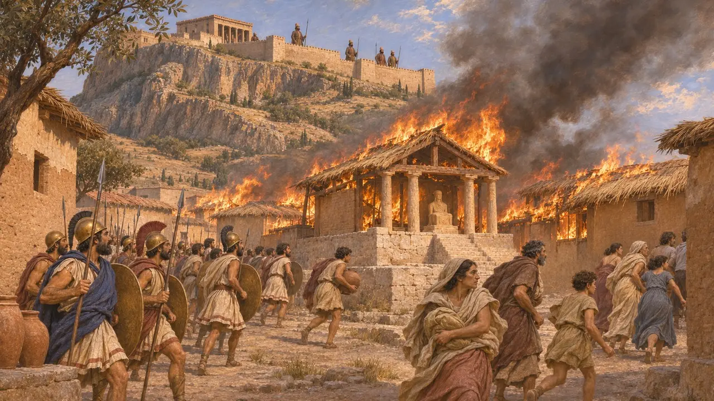

Sardes
Capital lidia, tomada por Ciro en la década de 540 a. e. c., y después sede del sátrapa persa en el oeste
En el juego: Nivel 5: La Carta, Nivel 7: Sardes arde, Nivel 8: La bahía de Maratón, Nivel 10: Las Puertas Calientes
Sardes fue la capital de los reyes lidios, construida al pie del monte Tmolo junto al aurífero Pactolo. Después de que Ciro la arrebatara a Creso, se convirtió en la principal sede persa en el oeste, residencia del sátrapa y extremo occidental del Camino Real a Susa. Heródoto presenta su incendio a manos de los jonios y sus aliados atenienses en el 498 a. e. c. como el comienzo de la larga disputa de Persia con Atenas.
En el juego: El nivel de Sardes transcurre en el 498 a. e. c., el año en que los jonios incendiaron la ciudad baja, y presenta la ciudad como sede del sátrapa y extremo occidental del Camino Real.

Una ciudad real al pie del monte Tmolo
En los documentosLas excavaciones iniciadas en 1958 han sacado a la luz una enorme muralla lidia y casas de la ciudad baja. Junto al Pactolo se encontraba una refinería donde se separaba el oro del electro del río, probablemente en tiempos de Aliates o de Creso. Un estrato de destrucción de mediados del siglo VI, con puntas de flecha y soldados caídos, suele relacionarse con la conquista persa. La inscripción de Behistún de Darío incluye Sparda, el nombre persa de Sardes y Lidia, entre sus tierras.
G. M. A. Hanfmann, Sardis from Prehistoric to Roman Times, 1983; A. Ramage and P. Craddock, King Croesus' Gold, 2000; E. R. M. Dusinberre, Aspects of Empire in Achaemenid Sardis, 2003; DB §6

Ciro toma la ciudadela
Relato antiguoHeródoto cuenta que Ciro derrotó a Creso en la llanura que se extendía ante la ciudad, colocando camellos en vanguardia para que su olor espantara a los caballos lidios. Creso se retiró entonces a Sardes y fue asediado. Al decimocuarto día, un soldado mardo llamado Hiroeades vio a un defensor descender por la pared escarpada de la acrópolis, que se había dejado sin guardia, y guio a otros a subir por el mismo camino.
Herodotus 1.79-84

La fecha de la caída
En disputaLa caída se fecha tradicionalmente en el 547 a. e. c. o el 546 a. e. c. Esa fecha se basa en gran medida en la Crónica de Nabonido, cuya entrada para el noveno año de Nabonido (547 a. e. c.) registra que Ciro marchó contra un país cuyo nombre está dañado y mató a su rey. Las lecturas antiguas restituían el nombre como Lidia, pero hoy muchos estudiosos leen en su lugar Urartu. Sin esa entrada, la conquista solo puede situarse de forma aproximada en la década de 540 a. e. c.
Nabonidus Chronicle, year 9; P. Briant, From Cyrus to Alexander, 2002

Creso en la pira
Leyenda posteriorHeródoto cuenta cómo Ciro colocó al cautivo Creso sobre una pira y luego se apiadó de él cuando Creso pronunció a gritos el nombre de Solón, y cómo Apolo envió la lluvia para apagar las llamas. El poeta Baquílides dio otra versión, en la que Creso subió él mismo a la pira y el dios se lo llevó. Ambas son relatos morales sobre la fortuna, no historia fiable.
Herodotus 1.86-87; Bacchylides, Ode 3

Sede del sátrapa y el incendio del 498 a. e. c.
Relato antiguoHeródoto nombra a Artafernes, medio hermano de Darío, gobernador en Sardes, y traza el Camino Real desde allí hasta Susa. En el 498 a. e. c., tropas jonias, atenienses y eretrias tomaron la ciudad baja mientras Artafernes resistía en la ciudadela. Un incendio prendió en las casas con techos de juncos, se extendió por la ciudad y quemó el templo de la diosa Cibebe. Heródoto dice que más tarde los persas lo alegaron como motivo para quemar templos griegos.
Herodotus 5.25, 5.52-54, 5.99-102
Fuentes
- Herodotus, Histories, books 1 and 5
- G. M. A. Hanfmann, Sardis from Prehistoric to Roman Times, 1983
- E. R. M. Dusinberre, Aspects of Empire in Achaemenid Sardis, 2003
- A. Ramage and P. Craddock, King Croesus' Gold, 2000
- Nabonidus Chronicle
- P. Briant, From Cyrus to Alexander, 2002